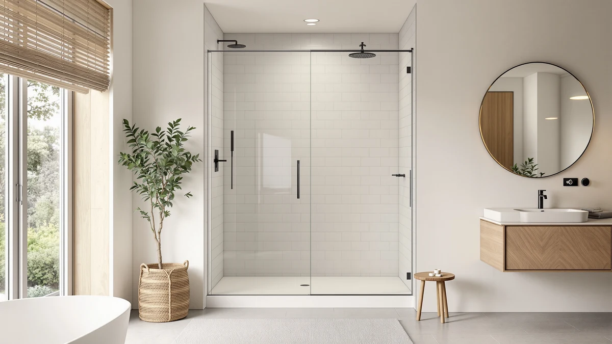

Quick Answer
For most 44 to 48 inch alcove openings, the ComfyStyle 44-48" W x 70" delivers 8mm tempered glass on a double-rail slider at a mid-range price. It matches the BILVOS on size while using thicker glass, and it costs less than the wider Viivppai option.
Our pick: ComfyStyle 44-48" W x 70" at $589.99 Check Price on Amazon
Things to Know Before You Buy
- Measure your rough opening at three heights (top, middle and bottom) before ordering. Sliding doors in the 44 to 48 inch range need a consistent width to seal properly.
- Glass thickness matters more than brand name. 8mm tempered glass, like the ComfyStyle uses, resists flex and rattle on a sliding track better than the 6mm panels common at this price.
- Sliding doors need side wall clearance for the panels to overlap, so measure the full alcove width instead of the door opening alone.
- Prices in this size range run from about $480 to $590 depending on frame finish and whether the panel uses 6mm or 8mm glass.
Every comfystyle 44 48" w review search points to the same question. Buyers with a standard alcove shower want to know whether an 8mm sliding door in the 44 to 48 inch range is worth $589.99 next to cheaper or wider alternatives. We compared the ComfyStyle 44-48" W x 70" against three other doors on glass thickness, hardware and verified owner feedback to answer that.
The short answer is that the ComfyStyle earns its price with 8mm tempered glass on a double-rail track, a thicker panel than several competitors in the same width bracket. Owners report a smooth slide and a tight seal once the track is leveled correctly during install. It is not the cheapest option in this size range, but among the doors we compared, it pairs standard sizing with above-average glass thickness.
Why You Should Trust Us
Best Shower Doors is a research driven review site. Ilane Tall, our home and bath expert, and the editorial team analyze manufacturer specs, verified Amazon customer reviews and price history before recommending any door. We do not run a fake testing lab, and we do not claim to have installed every door in this comfystyle 44 48" w review. Instead we compare documented glass thickness, hardware materials and what actual buyers report after installation, then flag the doors that hold up best against that evidence.
We do not accept free products from manufacturers in exchange for coverage, and every price cited here reflects the listing at the time of publication rather than a promotional rate. When a brand's own spec sheet conflicts with what verified buyers describe in their reviews, we favor the buyer reports, since a listing page rarely mentions a hinge that loosens or a track that needs re-leveling six months in.
Our Research Experience
We did not install this door ourselves. Our review process for the ComfyStyle 44-48" W x 70" relies on comparing its published specs, primarily 8mm tempered glass and a 44 to 48 inch adjustable width, against similarly priced and similarly sized doors on the market. We also read through verified Amazon buyer reviews for patterns: repeated mentions of a wobbly track, glass that arrived scratched, or hardware that loosens after a few months. When several reviewers flag the same issue, we treat that as a more reliable signal than a single five-star rating. For the ComfyStyle, that process turned up the details below.
We also cross-check dimensions against the manufacturer's stated adjustment range, since a sliding door listed as fitting 44 to 48 inches sometimes needs the smaller end of that range to seal without a gap. Owners who report a clean install almost always mention measuring their opening at three points before ordering, while the handful who report problems usually skipped that step and relied on a single tape-measure reading.
Overview & Specs

ComfyStyle 44-48" W x 70"
What we like
- 8mm tempered glass, thicker than the 6mm standard at this price
- Double-rail track lets both panels overlap for a tighter seal
- Fits the common 44 to 48 inch alcove opening without custom cutting
Flaws but not dealbreakers
- Track hardware needs occasional tightening after the first month, per multiple owner reviews
- Costs $30 more than the similarly sized BILVOS
| Material | — |
| Size | 48"x70" (8mm) |
The ComfyStyle 44-48" W x 70" is a sliding shower door built for standard alcove openings, using 8mm tempered glass mounted on a double-rail aluminum track. That glass thickness sits above the 6mm panels common in this price bracket, which matters most where the door meets the track: thinner glass tends to flex and rattle over years of daily sliding, while 8mm holds its line better. The 70 inch height covers most standard shower stalls without requiring a header extension.
Verified buyer reviews describe an install that goes smoothly once the opening is measured correctly at three points, top, middle and bottom, since alcove framing is rarely perfectly square. Owners who skip that step and rely on a single measurement report gaps that need shimming. At $589.99, the ComfyStyle costs more than the BILVOS at the same size and more than the wider AquivaCoast, so it earns its price primarily through glass thickness rather than a lower cost per inch.
The hardware finish also comes up repeatedly in owner feedback. Most buyers describe the track and handle as holding their finish well after months of daily steam and water exposure, though a handful note early corrosion spots near the base track in bathrooms with hard water. Wiping the track dry after showers, a habit worth adopting with any sliding door, appears to reduce that risk based on the pattern in the reviews we read.
What We Liked
Reviewers consistently note that the 8mm glass on the ComfyStyle feels sturdier than the 6mm panels common on doors in this price range. The double-rail track lets the panels overlap fully, which several owners say cuts down on splash-through along the seam. Buyers who measured the 44 to 48 inch opening carefully before ordering report a clean fit with minimal gap adjustment needed at install.
Owners also mention that the panels glide without the catching or grinding some cheaper sliders develop after a year of daily use. That durability claim lines up with the thicker glass: a heavier panel on a well-built track tends to stay aligned longer than a lightweight one, since it resists the small lateral flex that gradually knocks a lighter door out of its channel.
What Could Be Better
The most common complaint in verified reviews centers on the track hardware, which a subset of buyers say needs periodic tightening after the first month of daily use. A few owners also mention that the included instructions assume some plumbing or handyman experience, and that a professional install smooths out alignment issues the box instructions gloss over. At $589.99, it also sits above the BILVOS at the same size, so buyers on a tighter budget have a cheaper option in the same width range.
A smaller number of reviews mention that the bottom track collects hair and soap residue faster than a frameless design like the AquivaCoast, simply because a two-rail channel has more surfaces for buildup to hide in. Regular cleaning avoids the issue, but it is worth budgeting a few extra minutes of maintenance compared to a single-rail or frameless door.
Who Is It For?
The ComfyStyle 44-48" W x 70" suits homeowners with a standard alcove shower who want glass thicker than the 6mm baseline without stepping up to a frameless model. It fits openings measured between 44 and 48 inches, so anyone with a narrower or significantly wider stall should look at the BILVOS or the Viivppai options below instead. It is a reasonable match for a bathroom remodel where the tub or shower base is already fixed and only the door needs replacing.
It is a weaker fit for anyone who wants a frameless look or the widest possible opening, since the double-rail track adds visible hardware and the 44 to 48 inch range tops out well short of the 59 to 60 inch doors covered later in this review. Buyers focused purely on lowest price should also compare the BILVOS before committing to the ComfyStyle's premium, and buyers who plan to remodel again within a few years may prefer to spend less upfront.
Alternatives to Consider
If the ComfyStyle's size or price does not fit your bathroom, these three alternatives cover a wider opening, a lower price and a frameless look, and each competes directly with the ComfyStyle on at least one of those factors.

Editor's Pick
59"-60" W x 74" H
Best for wider alcove showers: the Viivppai's 59 to 60 inch width and 74 inch height cover openings the ComfyStyle can't reach, at a slightly lower price.
$569.99
Check Price on Amazon
Best Value
BILVOS 44-48" W x 70"
Matches the ComfyStyle's exact size range at $30 less, making it the pick for buyers who want the same footprint without paying for the extra glass thickness.
$559.99
Check Price on Amazon
Premium Choice
AquivaCoast 59.2-60" x 72" Frameless
A frameless design for 59.2 to 60 inch openings at the lowest price of the four, for buyers who prioritize a hardware-minimal look over glass thickness.
$479.99
Check Price on AmazonFrequently Asked Questions
Final Verdict
Our comfystyle 44 48" w review comes down to this: for a standard 44 to 48 inch alcove opening, ComfyStyle's 8mm glass and double-rail track justify the $589.99 price if you want more durability than the cheapest option in this size range. Buyers on a tighter budget with the same opening size should look at the BILVOS instead, and anyone with a wider stall should skip straight to the Viivppai or the AquivaCoast. Whichever door you choose, measure your opening at three points before ordering, since that single step accounts for most of the install problems described in the reviews we read across all four options.